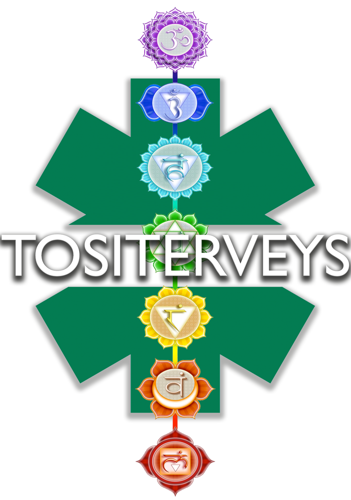

Suomalaisen homeopatian edelläkävijä
Yksisarvishoito purkaa henkisiä esteitä, poistaa negatiivisia energiavirtoja ja avartaa psyykettä. Yksisarviset toimivat henkimaailmassa välittämällä suuria energiamääriä sitä pyytäville. Hoito toimii fyysisiin kipuihin sekä psyykkisiin vaivoihin. Yksisarviset palvelevat korkeinta parasta, jolloin niiden toimintatavat ovat tuntemattomia, jolloin kipu tai masennus ei välttämättä parane heti, vaan yksisarviset kehottavat ihmistä oppimaan esteistä. Hoidossa avataan kaikki 12 päächakraasi ja ne puhdistetaan negatiivisesta energiasta nykyisestä ja edellisestä elämästäsi, jolloin chakrasi palaavat tasapainoon. Epätasapainossa olevat chakrat tukkivat energiakanavia, jolloin haitalliset henget ja negatiivinen energia tukkivat chakroja aiheuttaen fyysisiä vaivoja kuten lihaskipua tai päänsärkyä. Kun chakrasi palaavat tasapainoon, energiasi palaa positiivisten energiakanavien kautta henkimaailmaan. Hoitojen tarvittava määrä riippuu ihmisen henkisestä taakasta sekä korkeamman olemuksen tahdosta. Hoidot kestävät yhdestä tunnista kolmeen tuntiin. Tuntihinta on 129,99€
Energiavalohoidon tarkoitus on rentouttaa kehoa ja mieltä, sekä puhdistaa aurasi. Hoito auttaa myös tuomaan tietoisuuteen mm. kehoon kätkeytyneitä kipuja, tunnelukkoja ja sisäisen lapsen haavoja. Osa potilaista on kokenut lähentymistä esi-isiensä heimoenergioiden kanssa ja ovat saaneet heiltä apua henkiseen parantumiseen. Käyttämällä uusimpia ja kehittyneimpiä led-valoja, kanavoimme valoa kehon energiapisteisiin ja avaamme tukoskohtia auran eri tasoilla. Yksittäisellä hoidolla on usein rentouttava vaikutus, mutta suuremman hyödyn saa vasta useamman hoitokerran jälkeen. Kysy lisätietoa hoidosta ja hinnoista sähköpostilla. Ammattilaisemme räätälöivät hoidon vastaamaan jokaisen asiakkaan omia tarpeita ja toiveita.
Elämänvoimaenergiaa pyytettömän rakkauden Universaalilta Lähteeltä.
Anna sielusi levätä ja energiatasojesi kohota reikihoitajan avustuksella. Hoidon kesto 60 min. Etähoito 90 min.
Ulkoiset ja sisäiset stressinaiheuttajat ovat sielumme kuona-aineita. Joskus nämä epäpuhtaudet pääsevät kehittymään
mielen ja kehon sairauksiksi. Reikihoitajamme korjaa energiatasapainosi ja avaa tukkeutuneet chakrat toimimaan puhtaina.
Universaalin Lähteen energia on puhtaimmillaan lähikontaktissa, mutta myös etähoidot ovat mahdollisia. Sopii myös eläimille.
Tositerveyden tuotteet ja palvelut eivät ole lakisääteisten lääketieteen ammattilaisten hyväksymiä. Kaikki tuotteet ja palvelut on testattu vapaaehtoisten hippien toimesta. Tositerveys Oy ei ole vastuussa mahdollisesta mielenterveyden romahtamisesta, sisäisestä verenvuodosta, vastustuskyvyn heikkenemisestä, raskasmetallimyrkytyksestä tai kuolemasta.